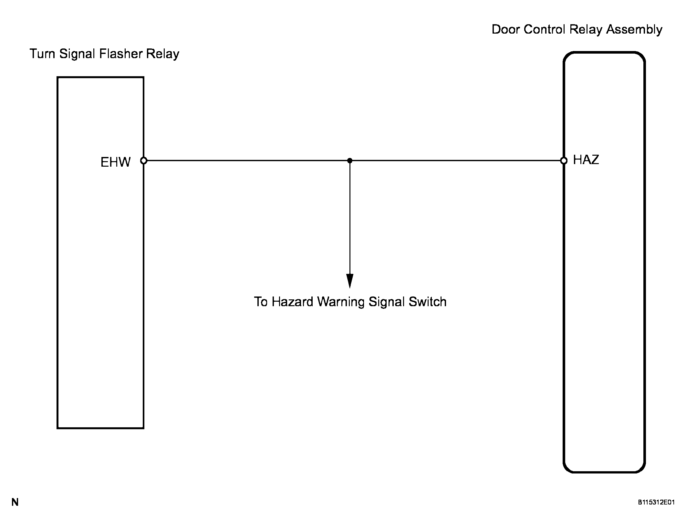

Home
>>
Scion
>>
2006
>>
xB Standard
>>
Repair and Diagnosis
>>
Body & Frame
>>
Door Locks
>>
Door Lock
>>
Wireless Door Lock Control System
>>
No Answer-Back
>>
Wiring Diagram
No Answer-Back: Wiring Diagram
Fig 1: No Answer-Back - Wiring Diagram

Courtesy of © TOYOTA, LICENSE AGREEMENT TMS1002